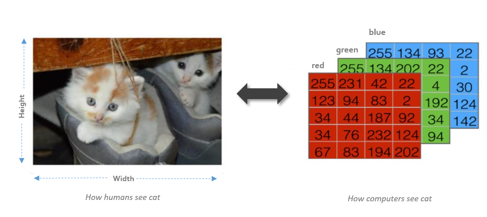
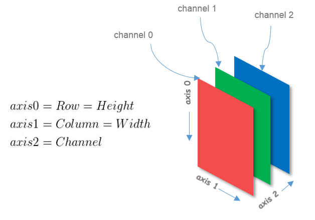
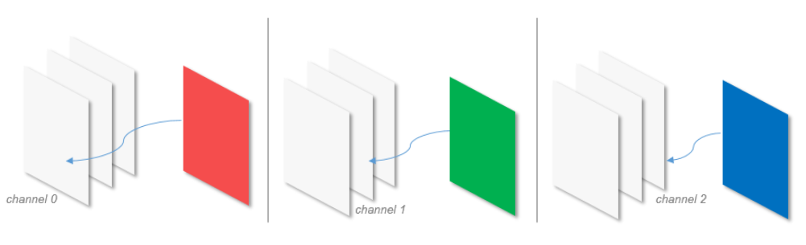
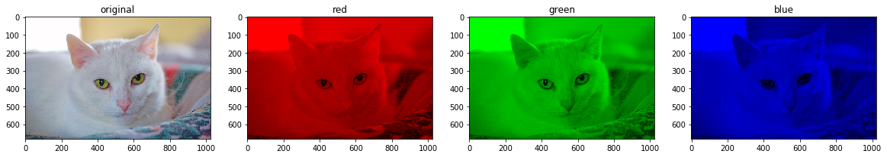

RGB Image Channels Plot using Numpy
My curiosity of understanding pixels better made me plot the color channels of an RGB image separately. I was not in pursuit of any hi-fi results but just 3 plots of Red, Green, Blue channels separately. To accomplish this all I needed was slicing and chopping of Numpy arrays. In starting, I was only looking for a simple way to achieve this - but found 3 ways, each little different in terms of numpy function used.
My motive here is not only to show you the different options to segregate the color channels but also present you the different numpy routines which may come very handy in image processing.
1 A Little About Images
RGB image, sometimes referred as a true-color image is stored as $ [Row, Column, Channels] $, a 3D numpy array. The number of rows in an image is equal to the height of the image and similarly, the number of columns represents the width of an image. Channels consists of Red, Green and Blue components of each individual $ [R_{i}, C_{j}] $ pixel. A pixel whose color components are (0,0,0) is displayed as black, and a pixel whose color components are (255,255,255) is rendered as white. Truecolor 24-bit format uses 8 bits for each color component.

image matrix
It’s important to understand how pixels of an image are arranged in a numpy array. Each image is stored as a 3D matrix of pixels and each channel is a 2-D matrix of a single color component. When you stack the 2-D arrays of respective channels along the 2nd axis you get a 3-D matrix.

image arch
Now we can proceed to the actual business of separating and plotting the individual channels. It will go like this -
- Read the image.
- Separate the 2-D matrix of each channel.
- Create a new 3-D matrix with required color values and other color values are assigned to zero.
- Plot the image.
2 Approach-1: Substitution Method
The substitution method is simple. This is how it goes -
- Take the image and separate the channels.
- Create a 3-D matrix of the same shape as of image Lets name this image as img_zero .
- Replace respective channels in the img_zero with the separated color channel.
It will be clear with the below figure and code.

substitution
|
|
Read the image and convert it into the RGB format. Note that OpenCV’s default format is BGR so we need to convert it into RGB before operating on the image.
|
|
3 Approach-2: Array stacking (numpy.dstack)
numpy.dstack() function stacks the arrays in sequence along the third axis. We create img_zero accordingly and stack the respective color array. You may notice that shape of img_zero varies for each case.
|
|
4 Approach-3: Extending the Dimension (numpy.atleast_3d) and Appending (numpy.append)
Each color array is a 2-D matrix and to append a 3-D array of zeros we need to add third dimension to the color array. numpy.atleast_3d() promotes a 2-D color array to 3-D array and then the 3-D color array is combined with layers of zeros using numpy.append().
|
|
5 Output

output
These are not the only methods through which you can accomplish this task. Check out numpy.concatenate() and numpy.stack() if you can achieve the same with these routines.